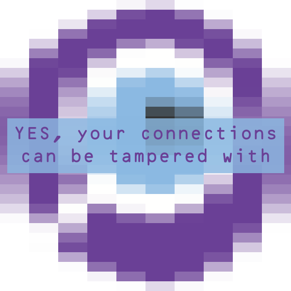
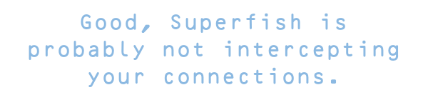

This test has been retired in favor of the badssl.com Dashboard.
You can still find Superfish removal instructions here.
Test disabled.
YES, it looks like you have a Komodia
proxy running (but not Superfish).
Unfortunately there aren't detailed removal instructions at the moment, but you can follow the Superfish ones with the name of the software you installed instead of "Superfish".
Here is an incomplete list of known affected softwares: "Keep My Family Secure", "Kurupira", "Qustodio", "Staffcop", "Easy hide IP Classic", "Lavasoft Ad-aware Web Companion".
YES, you have a big problem - even if it's not Komodia.
Apparently no certificates checks are happening. That's BAD. Anyone can intercept the connections you make.
This might be due to the browser you are using (if it's not a major one) or to software you are running, like PrivDog.

See here for instructions on removal.

Also no other SSL-disabling product was detected on your system.
What's this about? Turns out Lenovo preloaded their laptops with adware that will intercept all your secure connections, and allow criminals to do it, too.
After investigating the Lenovo incident we found out that many other softwares - like some Parental Controls or security packages - do things even worse for your security. This test attempts to detect them all.
Thanks to Karl Koscher, Paul Pearce, Marc Rogers, @TheWack0lian and all the others that discovered and divulged this.